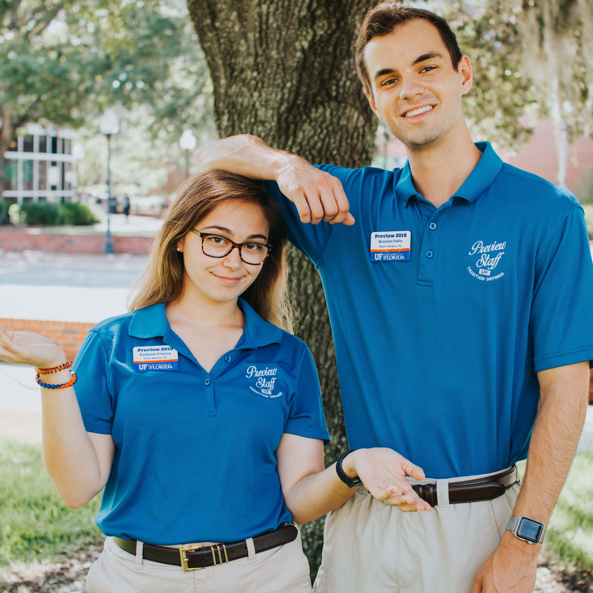

About Me
My name is Brandon Fallin, and I was born and raised in Palm Harbor, FL. From a young age I’ve been obsessed with rockets, spacecraft, and just about anything out of this world. After my first few visits to Kennedy Space Center, I was hooked. I am now a Senior at the University of Florida pursuing a dual degree in Mechanical and Aerospace engineering with hopes of one day building the rockets that I loved to see launch as a kid. Once I finish my bachelor’s degree, I plan on attending graduate school to get my Masters and a PhD in Aerospace Engineering. In my free time, I get a lot of satisfaction from being creative - photography, videography, and graphic design are some of my passions. I also love to lift weights and skateboard whenever I get the chance.
In my time at the University of Florida, I’ve made every effort possible to broaden my perspective outside of the lens of engineering. I have served on the executive board of my fraternity, took on the role of an Preview Staffer (Orientation Leader) in the Summer of 2019, and now serve as the Executive Director of the Interfraternity Council’s first ever mental wellness and brotherhood support initiative - ThriveIFC. Throughout all of these various leadership experiences, I have found a passion for working in dynamic team environments with other passionate students on campus. I hope to take what I have learned from these experiences and apply that knowledge to the field of Aerospace Engineering. If you are interested in learning more about my qualifications, click below to download my full resume.